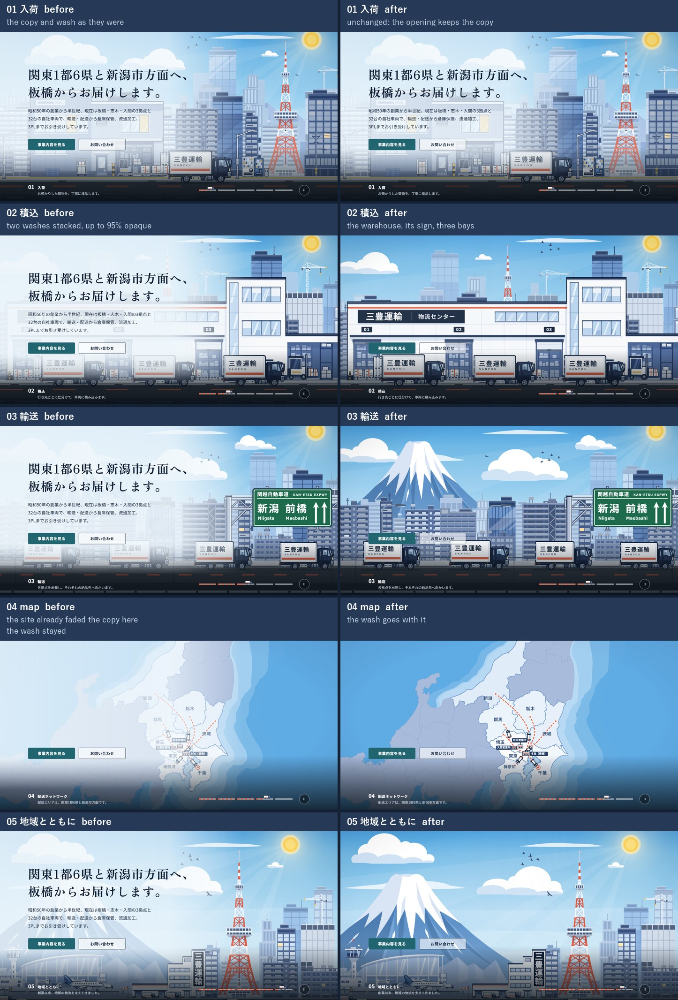
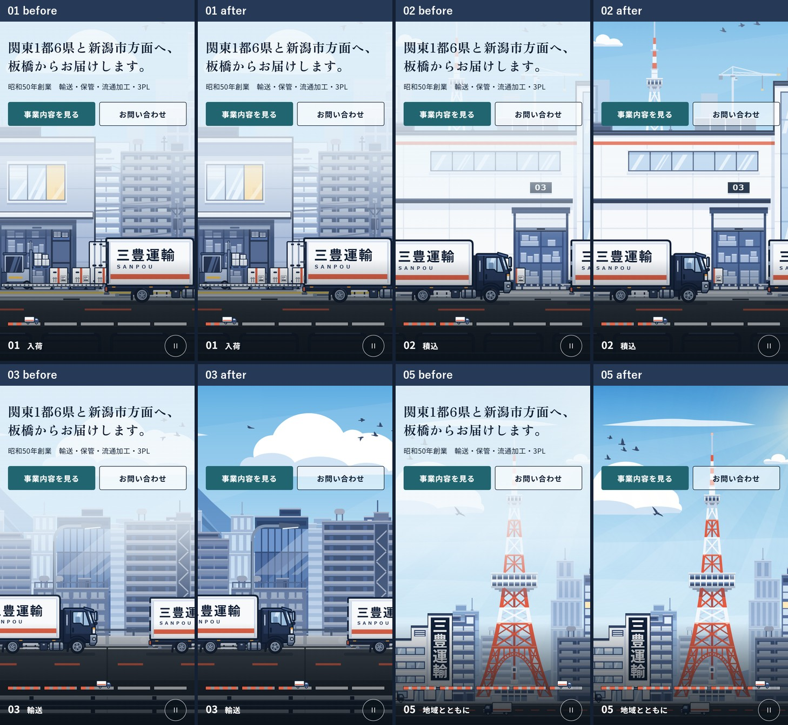

The owner, 2026-11-16: the fading background behind the title "blocks half the animation section". It did. On a 1440 desktop the pale wash was .86 opaque at the left edge, still .72 exactly half-way across, and did not clear until 72 % of the width — and on scenes 02 and 03 a second wash sat on top of it, up to 95 % opaque together. The film is not changed. This is the site's overlay, built here as an additive stylesheet so the site itself stays untouched while it is judged.
The copy and both washes are up during the opening scene, then clear. They come back whenever the film is paused, when someone tabs into the copy, and under reduced motion. The site already did exactly this on scene 04; these rules apply it to every scene after the first and take the washes with it. The two buttons never leave.
desktop
phone, 2x

On a phone the wash is a different rule: a band across the TOP, not the left.

| check | result |
|---|---|
node tools/check-copy.mjs round2 --framing=desktop (and --framing=phone), through the site's real player | OK — up on the opening, gone while it runs, back when paused, back on keyboard focus, back under reduced motion, and the dark band under the controls never moves |
node tools/contrast-check.mjs round2 --every=1000, playing | headline 9.74, sub-copy 9.86, both buttons, every caption — all pass AA |
node tools/contrast-check.mjs round2 --every=1000 --static, i.e. paused on every scene | headline worst 7.43, sub-copy 9.86 — the copy is legible on all five scenes when it comes back |
node tools/check-viewer.mjs round2 | 0 console errors, all three framings |
node tools/check-player-vs-glue.mjs round2 | the clock player matches the site's real player in every hold |
cd original && sha256sum -c SHA256SUMS; the website folder | 7 OK; clean at 72862b6 — nothing on the site touched |
contrast-check: track unfilled | FAIL 1.00 — pre-existing. The same row fails on the original side too (1.05 on a phone). The site's own progress bar over a pale sky, not the film and not this change. |
| file | what |
|---|---|
round2/css/hero-copy.css | the rules, 40 lines, additive. For the integration task they replace the .on-map block in css-src/40-hero.css. |
round2/js/hero-glue.js, viewer/player.js | one line each: the class copy-out on every scene after COPY_UNTIL (0 = the opening only). Change that one constant to keep the copy up for longer. |
sides.json, viewer/frame.html | a side may now carry its own stylesheet on top of the site's. The original side has none, so it still shows the old behaviour for comparison. |
tools/check-copy.mjs | new. contrast-check.mjs gained --css=<file> and --static; scrim-shot.mjs shoots any wash strength. |
The four whole-film recordings on the film page were made before this and still show the old overlay. If this is kept, they should be recorded again.